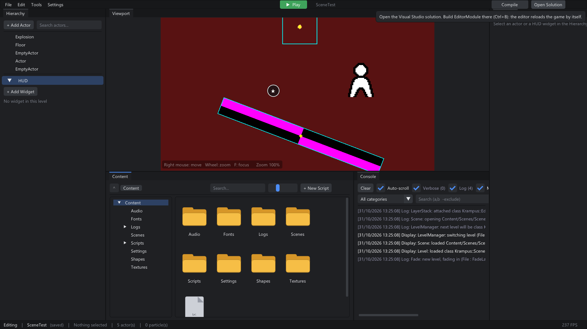
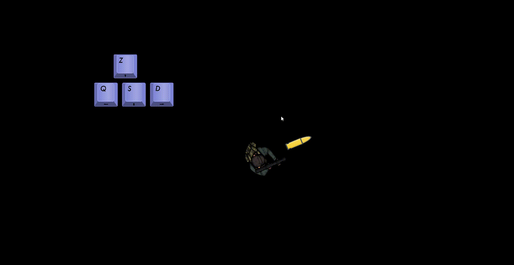
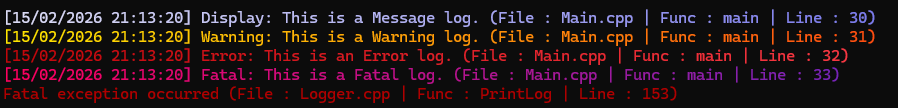

KrampusEngine
Un moteur 2D complet, avec éditeur, rechargement à chaud du C++ et export du jeu en une commande.

Je voulais comprendre ce qu'il y a sous un moteur commercial. Alors j'en ai écrit un, couche par couche : boucle de jeu, acteurs et composants, système de réflexion, format de scène, physique, réseau, et l'éditeur par-dessus.
Le flux de travail ressemble à celui d'Unreal. On place les acteurs dans l'éditeur, on écrit le gameplay en C++, on appuie sur F7 : le module de jeu est recompilé en tâche de fond et rechargé, sans perdre la scène en cours, même non sauvegardée. Un bouton Play lance la scène ; Stop la remet exactement comme avant.
La réflexion tient en quelques macros, sans génération de code. Une propriété déclarée avec
KPROPERTY apparaît dans l'inspecteur et se sauvegarde dans la scène. Une fonction marquée
KFUNCTION peut être branchée sur une touche, un bouton ou un message réseau depuis l'éditeur.
// MovementComponent.h
class MovementComponent : public Component
{
KCOMPONENT(MovementComponent, Component)
public:
MovementComponent(Actor* _owner);
KPROPERTY(Float, moveSpeed) = 1.f; // inspecteur + sauvegarde
KFUNCTION(MoveLeft) // branchable sur une entrée
void MoveLeft();
};Pour tester le moteur sur un vrai jeu, j'ai fait Krampus Night : un shooter en arène, vagues de démons, jouable seul ou en coopération. Le mode solo et le mode coop passent par le même code : hors ligne, le spawn réseau crée simplement l'acteur en local.
Problèmes rencontrés
Le rechargement à chaud échouait une fois sur deux.
Visual Studio gardait le fichier PDB verrouillé tant que la DLL était chargée. L'éditeur copie maintenant la DLL sous un nom unique avant de la charger, et chaque édition de liens produit un PDB au nom horodaté.
Crash quand une balle tuait un démon.
L'acteur était détruit à l'intérieur du callback de collision de box2d. Les destructions sont maintenant notées
pendant le callback et faites au Tick suivant.
Le jeu se figeait en multijoueur.
Une réception UDP bloquante attendait un paquet qui n'arrivait jamais. Toutes les sockets sont non bloquantes, et un test d'intégration lance un vrai hôte et un vrai client en boucle locale.

